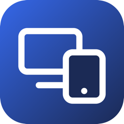

Todo pasa directo entre el Mac y la tablet: sin nube, sin cuentas, sin navegador.

Mac · app ScreenMT
Ver tabletscrcpyMuestra y maneja la tablet en una ventana del Mac
Archivosadb push / pull + receptor propioManda y trae archivos; recibe lo que envía la app de la tablet
2.ª pantallascreenmt-pantalla (Swift)Crea una pantalla virtual o copia la tuya, la graba con ScreenCaptureKit y la comprime en H.264 por hardware
Cable USB
adb · adb reverse
video H.264
toques y archivos
o wifi
con clave de un solo uso
Tablet · Android
Ver tabletLa tablet tal cualscrcpy usa las herramientas que Android ya trae
ArchivosDescargas · app ScreenMTLo del Mac llega a Descargas; «Enviar archivos al Mac» manda al Mac
2.ª pantallaApp ScreenMTDecodifica el video por hardware (MediaCodec) a pantalla completa y devuelve los toques